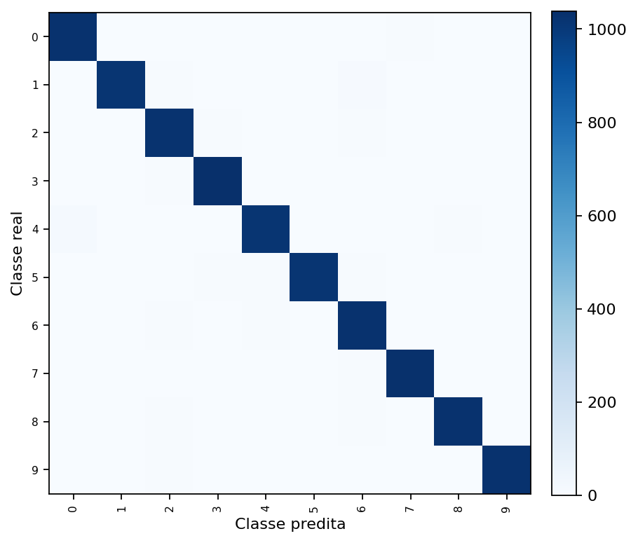
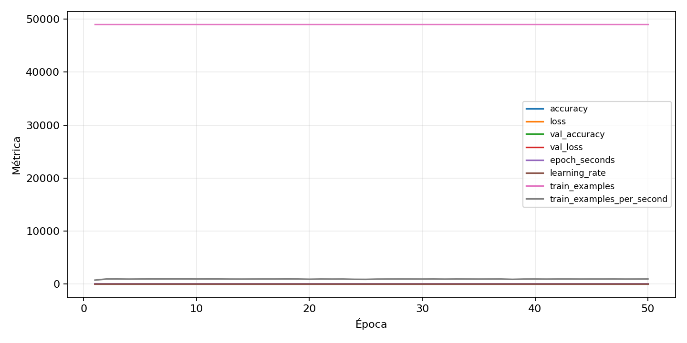

| n_samples | 10500 |
|---|---|
| loss | 0.1233581081032753 |
| accuracy | 0.9767619047619047 |
| balanced_accuracy | 0.9767619047619046 |
| macro_f1 | 0.9767722458725988 |


| Índice | Classe | Suporte | Precisão | Recall | F1 |
|---|---|---|---|---|---|
| 0 | 0 | 1050 | 0.9753320683111955 | 0.979047619047619 | 0.9771863117870723 |
| 1 | 1 | 1050 | 0.9816779170684667 | 0.9695238095238096 | 0.9755630091039771 |
| 2 | 2 | 1050 | 0.9641847313854854 | 0.9742857142857143 | 0.9692089057318808 |
| 3 | 3 | 1050 | 0.9755868544600939 | 0.9895238095238095 | 0.9825059101654846 |
| 4 | 4 | 1050 | 0.9741131351869607 | 0.9676190476190476 | 0.970855231724797 |
| 5 | 5 | 1050 | 0.9931640625 | 0.9685714285714285 | 0.9807135969141756 |
| 6 | 6 | 1050 | 0.9598130841121495 | 0.9780952380952381 | 0.968867924528302 |
| 7 | 7 | 1050 | 0.9791073124406457 | 0.981904761904762 | 0.9805040418449833 |
| 8 | 8 | 1050 | 0.9818875119161106 | 0.9809523809523809 | 0.981419723677942 |
| 9 | 9 | 1050 | 0.9837164750957854 | 0.9780952380952381 | 0.9808978032473734 |
{"adapter":"kmnist","balance_mode":"all_raw","class_names":["0","1","2","3","4","5","6","7","8","9"],"dataset":"kmnist","dataset_options":{},"dataset_root":"/home/msduda/datasets-tcc/kmnist","native_channels":1,"normalization":"unit_interval","num_classes":10,"protocol":{"checkpoint_monitor":"val_macro_f1","dtype_policy":"mixed_float16","early_stopping":{"patience":50,"restore_best_weights":true},"evaluation_augmentation":false,"input_channels":"native","optimizer":"Adam","pretrained_weights":false,"reduce_lr_on_plateau":{"factor":0.3,"min_lr":1e-07,"patience":50},"resize":"proportional_padding","test_time_augmentation":false,"training_from_scratch":true},"seed":42,"source_fingerprint":"8928d478d8d23938a73b4f4a92c407bf3d74beff1e0e67e3644d6ecdc30cf828","source_manifest":{"class_names":["0","1","2","3","4","5","6","7","8","9"],"joined_samples":70000,"metadata":{"layout":"kmnist-component-npz"},"name":"kmnist","native_channels":1,"source_path":"/home/msduda/datasets-tcc/kmnist","splits":{"test":10000,"train":60000},"target_size":64},"target_size":64,"test_fraction":0.15,"train_fraction":0.7,"training":{"augmentation":{"brightness_delta":0.0,"contrast_lower":1.0,"contrast_upper":1.0,"cutout_max_frac":0.0,"cutout_prob":0.0,"flip_lr":false,"noise_std":0.0,"translate_frac":0.0,"zoom_max":1.0,"zoom_min":1.0},"batch_size":368,"default_image_size":64,"dtype_policy":"mixed_float16","early_stopping_patience":50,"extra_fraction":0.0,"image_size_overrides":{"gtsrb":128},"keras_verbose":1,"learning_rate":0.0003,"max_epochs":50,"preprocess_cache_max_mib":0,"reduce_lr_factor":0.3,"reduce_lr_min_lr":1e-07,"reduce_lr_patience":50,"shuffle_buffer_max_mib":0},"validation_fraction":0.15}
{"epochs_completed":50,"epochs_recorded":50,"evaluation_seconds":18.85502414599614,"fit_seconds_current_attempt":3115.237214476998,"max_epoch_seconds":65.78298392099896,"max_epochs":50,"mean_epoch_seconds":52.23272812892028,"mean_train_examples_per_second":939.3745538814368,"median_train_examples_per_second":946.1127449964874,"min_epoch_seconds":50.91050083099981,"selected_checkpoint":"/mnt/e/tcc-benchmark/outputs/kmnist-alldata-noaug-batch-sweep-2026-08-06/batch-368/kmnist/runs/kmnist__unit_interval__all_raw__seed-42/checkpoints/best.keras","total_seconds":2611.636406446014,"training_seconds":2611.636406446014,"wall_seconds_current_attempt":3137.6876265799983}
{"elapsed_seconds":3137.7424319010024,"event_counts":{"data_preparation_end":1,"data_preparation_start":1,"epoch_end":50,"evaluation_end":1,"evaluation_start":1,"fit_end":1,"fit_start":1,"periodic":618,"run_completed":1,"train_start":1},"generated_at":"2026-08-08T02:58:34.369+00:00","gpu_backend":"pynvml","interval_seconds":5.0,"metrics":{"cpu_percent":{"count":676,"max":16.8,"mean":13.048224852071007,"min":0.0,"p50":13.3,"p95":16.3},"disk_data_free_bytes":{"count":676,"max":998271074304.0,"mean":998271010828.1183,"min":998271000576.0,"p50":998271008768.0,"p95":998271012864.0},"disk_data_percent":{"count":676,"max":2.7,"mean":2.7,"min":2.7,"p50":2.7,"p95":2.7},"disk_data_total_bytes":{"count":676,"max":1081101176832.0,"mean":1081101176832.0,"min":1081101176832.0,"p50":1081101176832.0,"p95":1081101176832.0},"disk_data_used_bytes":{"count":676,"max":27837820928.0,"mean":27837810675.881657,"min":27837747200.0,"p50":27837812736.0,"p95":27837812736.0},"disk_output_free_bytes":{"count":676,"max":207147155456.0,"mean":207134253861.8698,"min":207133282304.0,"p50":207134138368.0,"p95":207134388224.0},"disk_output_percent":{"count":676,"max":79.3,"mean":79.3,"min":79.3,"p50":79.3,"p95":79.3},"disk_output_total_bytes":{"count":676,"max":1000186310656.0,"mean":1000186310656.0,"min":1000186310656.0,"p50":1000186310656.0,"p95":1000186310656.0},"disk_output_used_bytes":{"count":676,"max":793053028352.0,"mean":793052056794.1301,"min":793039155200.0,"p50":793052172288.0,"p95":793052939264.0},"elapsed_seconds":{"count":676,"max":3137.678196,"mean":1571.5025980621301,"min":0.028561,"p50":1571.4920914999998,"p95":2995.4665655},"gpu_count":{"count":676,"max":1.0,"mean":1.0,"min":1.0,"p50":1.0,"p95":1.0},"gpu_memory_percent":{"count":676,"max":52.44860649108887,"mean":51.66276319492498,"min":38.22803497314453,"p50":52.24337577819824,"p95":52.36468315124512},"gpu_memory_total_bytes":{"count":676,"max":8589934592.0,"mean":8589934592.0,"min":8589934592.0,"p50":8589934592.0,"p95":8589934592.0},"gpu_memory_used_bytes":{"count":676,"max":4505300992.0,"mean":4437797566.863905,"min":3283763200.0,"p50":4487671808.0,"p95":4498092032.0},"gpu_temperature_c":{"count":676,"max":53.0,"mean":43.57988165680474,"min":38.0,"p50":43.0,"p95":51.0},"gpu_utilization_percent":{"count":676,"max":86.0,"mean":26.763313609467456,"min":1.0,"p50":26.0,"p95":61.0},"process_cpu_percent":{"count":676,"max":215.8,"mean":171.4258875739645,"min":0.0,"p50":178.75,"p95":210.9},"process_read_bytes":{"count":676,"max":10067968.0,"mean":10058479.337278107,"min":7933952.0,"p50":10067968.0,"p95":10067968.0},"process_rss_bytes":{"count":676,"max":3865407488.0,"mean":3696258460.023669,"min":1029840896.0,"p50":3772346368.0,"p95":3827478528.0},"process_vms_bytes":{"count":676,"max":48615763968.0,"mean":48343968774.05917,"min":39580278784.0,"p50":48465907712.0,"p95":48548655104.0},"process_write_bytes":{"count":676,"max":1146880.0,"mean":1133004.49704142,"min":4096.0,"p50":1146880.0,"p95":1146880.0},"ram_available_bytes":{"count":676,"max":15539314688.0,"mean":13040075982.011835,"min":12874362880.0,"p50":12963753984.0,"p95":13507691520.0},"ram_percent":{"count":676,"max":22.5,"mean":21.53298816568047,"min":6.5,"p50":22.0,"p95":22.3},"ram_total_bytes":{"count":676,"max":16619085824.0,"mean":16619085824.0,"min":16619085824.0,"p50":16619085824.0,"p95":16619085824.0},"ram_used_bytes":{"count":676,"max":3744722944.0,"mean":3579009841.988166,"min":1079771136.0,"p50":3655331840.0,"p95":3708142592.0}},"sample_count":676,"schema_version":1}